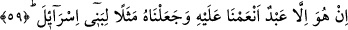

Bazı büyükler şöyle demiştir: Şâyet Peygamberimiz (s.a.) “sizin tanrılarınız Îsâ’dan
hayırlıdır” demiş olsaydı, bu sefer Îsâ’nın mâbud olduğunu itiraf etmiş olacaktı. Yine
“Îsâ sizin tanrılarınızdan hayırlıdır” demiş olsaydı, Îsâ’nın mâbudluğa elverişli
bulunduğunu itiraf etmiş olacaktı. Şâyet “bunların hiç birinde hayır yoktur” deseydi, bu
kez Îsâ (a.s.)’ı reddetmiş olacaktı.
İşte onlar, bu soruyu sırf tartışma için sormuşlardır, istifâde etmek için değil. Allah
Teâlâ, bunların tartışmalarının bir faydaya yönelik değil, sırf düşmanlık için olduğunu
beyan etmekte ve şöyle buyurmaktadır: “Doğrusu onlar” tartışma ve ihtilaf üzere
yaratılmış, (bunu huy edinmiş) bâtılı savunan “kavgacı bir toplumdur.” Nitekim bu
hususta: “…ama insan tartışmaya her şeyden daha çok düşkündür” (el-Kehf, 18/54)
Bunun îzahı şöyledir: Çünkü bu müşrikler Allah Teâlâ’nın “siz ve Allah’tan başka
taptıklarınız” (el-Enbiyâ, 21/98) ifâdesinden maksadın, makamın şehâdetiyle putlar
olduğunu kesinlikle biliyorlardı. Ancak Abdullah b. Zibâra, sözün zâhir bakımından
genel bir mânâya da müsait olduğunu görünce tartışmaya bir zemin bulmuş oldu.
Nitekim, “Hiçbir kavim hidâyete ulaştıktan sonra sapıtmamıştır. Ancak haksız
tartışmaya girmiş olmaları onları saptırır” buyurduktan sonra Peygamberimiz (s.a.),
“Bunu sâdece tartışma için sana misâl verdiler. Doğrusu onlar, kavgacı bir
toplumdur” âyetini okudu.”[177]
59. O, sadece kendisine nimet verdiğimiz ve İsrâiloğullarına örnek kıldığımız bir
kuldur.
“O, sadece kendisine” peygamberlikle yahut babasız yaratmakla veya nefsânî
duygularını kırmakla “nimet verdiğimiz ve İsrâîloğullarına” darb-ı meseller ve dilden
dile dolaşan örnekler gibi bir “örnek kıldığımız bir kuldur.” Allah’ın oğlu değildir.
Zaten kul, Mevlâ da olamaz, putlar gibi ilah da olamaz.
Yahya b. Muâz şöyle demiştir: Biz Meryem oğlu Îsâ’nın zâhirini müridlere imam,
bâtınını ise âriflere nur yaparak lutuf ve ihsanda bulunduk.
Bazı büyükler şöyle demiştir: Biz Meryem oğlu Îsâ’yı, lutuf ve ihsânımızı arzulayarak
kulluğumuza koşacaklar için, kendisinden ders alacakları bir ibret ve örnek yaptık.
Zaten Allah’ın nimet verip lutuf ve ihsanda bulunduğu her kul, ya nebî yahut velîdir.
60. Eğer dileseydik, içinizden, yeryüzünde yerinize geçecek melekler yaratırdık.